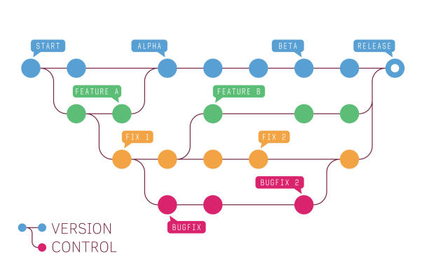

La tecnología Git es un sistema de control de versiones que se ha convertido en una herramienta popular entre los desarrolladores de software, los desarrolladores web y los administradores de proyectos. La tecnología Git es un sistema de control de versiones distribuido que permite a los usuarios realizar un seguimiento de los cambios realizados en un proyecto y colaborar con otros. Este ensayo explorará los beneficios de usar la tecnología Git, sus características y funcionalidades, y sus aplicaciones prácticas. Comprensión. La tecnología Git es un sistema de control de versiones distribuido que permite a los usuarios realizar un seguimiento de los cambios realizados en un proyecto. Fue creado por Linus Torvalds en 2005 para el desarrollo del kernel de Linux. La tecnología Git funciona creando un repositorio que contiene todos los archivos y carpetas de un proyecto. Cada vez que se realiza un cambio en un archivo, la tecnología Git realiza un seguimiento de los cambios y crea una nueva versión del archivo. Esto permite a los usuarios volver fácilmente a las versiones anteriores si es necesario. Los beneficios de usar la tecnología Git son numerosos. Permite una fácil colaboración entre los miembros del equipo, ya que cada miembro puede trabajar en su propia copia del proyecto y fusionar los cambios. También permite ramificaciones y fusiones sencillas, lo que significa que se puede trabajar en diferentes versiones de un proyecto simultáneamente sin interferir entre sí. Además, la tecnología Git es gratuita y de código abierto, lo que la hace accesible para todos.
Las características y funcionalidades de . La tecnología Git tiene varias características y funcionalidades que la convierten en una poderosa herramienta para el control y la gestión de versiones. Una de sus características clave es el control de versiones, que permite a los usuarios realizar un seguimiento de los cambios realizados en un proyecto a lo largo del tiempo. La tecnología Git también permite la colaboración y el flujo de trabajo en equipo, ya que varios usuarios pueden trabajar en un proyecto simultáneamente y fusionar los cambios. Otra característica importante de la tecnología Git es la ramificación y la fusión, que permite a los usuarios trabajar en diferentes versiones de un proyecto sin interferir entre sí. El control y la gestión de versiones es una característica esencial de la tecnología Git. Permite a los usuarios realizar un seguimiento de los cambios realizados en un proyecto y volver fácilmente a las versiones anteriores si es necesario. La colaboración y el flujo de trabajo en equipo también es una característica importante de la tecnología Git, ya que permite que varios usuarios trabajen en un proyecto simultáneamente y combinen los cambios. La bifurcación y la fusión es otra característica importante de la tecnología Git, ya que permite a los usuarios trabajar en diferentes versiones de un proyecto sin interferir entre sí. Las aplicaciones prácticas de . La tecnología Git tiene aplicaciones prácticas en el desarrollo y la programación de software, el desarrollo web y la gestión de contenido, y la gestión y documentación de proyectos. En el desarrollo y la programación de software, la tecnología Git se utiliza para realizar un seguimiento de los cambios realizados en el código y colaborar con otros desarrolladores. En el desarrollo web y la gestión de contenido, la tecnología Git se utiliza para gestionar el contenido del sitio web y realizar un seguimiento de los cambios realizados en las páginas web. En la gestión y documentación de proyectos, la tecnología Git se utiliza para gestionar archivos de proyectos y realizar un seguimiento de los cambios realizados en los documentos del proyecto. En el desarrollo y la programación de software, empresas como Google, Microsoft y Facebook utilizan la tecnología Git para administrar sus repositorios de código. En el desarrollo web y la gestión de contenido, empresas como WordPress y Drupal utilizan la tecnología Git para gestionar el contenido del sitio web. En la gestión y documentación de proyectos, empresas como Atlassian y GitHub utilizan la tecnología Git para gestionar archivos de proyectos y realizar un seguimiento de los cambios realizados en los documentos de proyectos.
"Un fanático del git que solo quiere compartir su pasión"